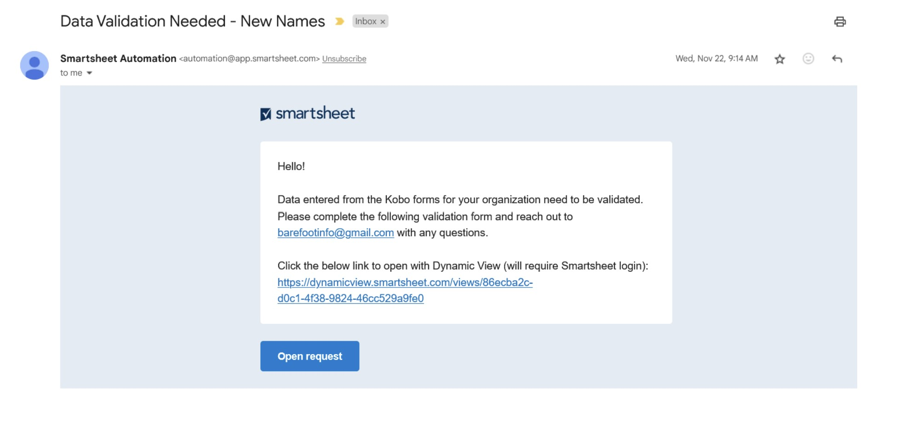

Data Validation
Fisheries Data Validation Giya
Ang tanan nga datos nga nag-agos pinaagi sa sistema sa datos sa pangisda gipamatud-an Sa Smartsheet. Data gipadala alang sa validation sa ilalum sa duha ka mga sitwasyon; 1) bag-ong mga ngalan sa kamut gidugang sa Kobo Pagkolekta, o 2) ang usa ka numeric bili mahulog sa unahan sa malig-on nga mga tukmaan. Sa higayon nga ang datos mapamatud-an, ang mga master data sa database ug ang mga lamesa sa pakisayran gi-update. Ang mga lamesa sa pakisayran nagsilbing mga input alang sa mga lista sa dropdown sa mga porma sa KoboToolbox ug adunay sulud nga datos nga gidugang sa master datasets pinaagi sa mga pag-apil. Tan-awa ang kahon sa Ubos (Tan-awa ang Parapo 1)
Ang datos nga na-trigger alang sa pag-validate gipadala sa usa sa tulo nga mga lamesa: 1) Mga Landing Name QA, 2) Mga Species QA, o 3) Mga Pasidaan SA Kantidad QA. Ang mga panudlo sa ubos detalye sa proseso sa pag-validate sa datos Sa Smartsheet alang sa tulo nga mga lamesa sa pagpanghimatuud. Ang matag validation lamesa nagkinahanglan sa bisan hain sa pagpili sa husto nga uma bili gikan sa usa ka dropdown listahan o pagsulod sa husto nga mga prinsipyo sa kamut. Ang proseso igadugang alang sa umaabot nga mga kinahanglanon sa pag-validate sa datos, kung gikinahanglan.
Lakang 1: Paghatag Og Nagtiniil Dagat Uban sa punto sa contact email addresses alang sa mga responsable alang sa data validation.
Ang organisasyon sa pagdumala sa daghang mga kauban mahimong maghatag sa tanan nga mga punto sa kasayuran sa pagkontak.
Ang mga indibidwal nga kauban mahimong maghatag punto sa kasayuran sa pagkontak.
Ang mga punto sa pagkontak makadawat mga pahibalo sa pag-validate sa datos pinaagi sa email.
Lakang 2: Susihon ang imong email alang sa usa ka hangyo sa pagpanghimatuud sa datos.
Makadawat Ka usa ka email gikan sa “Smartsheet Automation” (Figure 2)
Ang email adunay sulud nga mensahe nga adunay mga link aron magpadayon nga adunay pag-validate pinaagi sa Usa ka “Dinamikong Pagtan-aw” o “Bukas Nga Hangyo”. Ang dinamikong Pagtan-aw usa ka format sa lamesa ug Ang Bukas Nga Hangyo magdirekta kanimo sa usa ka porma sa pagpanghimatuud.
Aron maablihan uban ang” Dinamikong Pagtan-Aw ” (Lakang 3, Kapilian A), i-klik ang link nga nagsugod sa “https://dynamicview.smarthseet.com…”
Aron maablihan ang porma sa hangyo sa pag-update (Lakang 3, Kapilian B), i-klik ang asul nga “Open request” button
Usa ka preview sa mga entries nga kinahanglan nga validated makita sa ubos niini nga mensahe, apan dili kamo makahimo sa validate sa bisan unsa nga data direkta sa email
Sa ilawom sa email, adunay usa ka link alang sa “Pag-Adto sa sheet”; bisan pa, ang nagpahiping sheet nagpugong sa pag-access. Palihug ribyuha ang imong data validation pinaagi Sa Dinamikong panglantaw, Bukas nga hangyo, o ang imong partner-piho nga report (pag-anhi sa dili madugay).
Figure 1: data validation desisyon kahoy.

Figure 2: Sample Smartsheet Validation Email Nga Mensahe

Lakang 3, Kapilian A: Kompletoha ang imong data validation pinaagi Sa Dinamikong Panglantaw (girekomendar)
Alang niini nga opsyon, kamo kinahanglan gayud nga sa paghimo Sa Usa ka Libre nga Smartsheet account. Gipadala ka gikan sa email aron mag-set up usa ka account.
I-klik Ang Dynamic View link sa hangyo sa email.
Ang usa ka bag-ong bintana sa browser sa internet magbukas sa usa ka setup nga sama sa lamesa alang sa tanan nga mga entry. Dinhi, dali ka nga mag-scroll sa tanan nga mga entry nga nanginahanglan validation.
I-klik sa usa ka talay sa pagsugod sa validation.
Usa ka panel nga” Mga Detalye ” ang makita sa tuo.
Ribyuha ang konteksto kaumahan ug pun-on sa validation kaumahan. Ang mga natad sa pagpanghimatuud adunay sulud nga datos nga ibalhin sa katapusang dataset (Table 1).
Leave sa usa ka comment, LAMANG KON adunay usa ka butang nga nagkinahanglan sa atong pagtagad. Ang mga kawani sa Kadagatan nga nagtiniil magribyu sa mga komento ug motubag sa husto.
I-klik ang asul nga “Save” button sa pagluwas sa imong pagpili.
Sa higayon nga mapamatud-an, kana nga laray mawala gikan sa imong dinamikong panan-aw.
I-klik ang sunod nga laray ug balika ang mga lakang aron makompleto ang validation alang sa tanan nga mga entries.
Ikaw mahimo exit ug re-pagsulod pinaagi sa pagklik sa dinamikong panglantaw link gikan sa imong email o logging sa imong account sa bisan unsang panahon. Dili nimo kinahanglan nga i-validate ang tanan nga mga entry sa usa ka paglingkod.
Ikaw mahimo bookmark kini nga link ug mobalik sa bisan unsang panahon.
Lamesa 1: Panguna nga mga natad sa mga lamesa sa pagpanghimatuud. Ang mga natad sa konteksto naghatag kasayuran nga gikinahanglan aron mapanghimatuud ang datos. Ang mga natad sa pag-validate gipuy-an sa mga datos nga ibalhin sa master datasets. Ang validation field lang ang pwede i-edit. Ang ubang mga natad makita lamang sa panel nga” Mga Detalye ” kung ang usa ka laray gi-klik sa Dinamikong lamesa sa Pagtan-aw.
| Validation lamesa uma | Paghulagway sa uma | Matang sa uma |
|---|---|---|
| Ang Tanan Nga Mga Lamesa | ||
| partner | ngalan sa organisasyon pagkolekta sa datos | konteksto |
| admin3_landed | Baryo o sub-baryo diin ang nakuha natala ug natala | konteksto |
| data_collector | Ngalan sa tawo nga nakolekta ang datos sa Kobo (enumerator) | konteksto |
| Mga Ngalan Sa Landing Table | ||
| kobo_field | Ang uma gikan Sa kobotoolbox porma nga kinahanglan nga validated: fisher_name, buyer_name, data collector_name, o landingsite_name | konteksto |
| new_data | Ang kantidad nga gisulud alang sa katugbang nga kobo_field | konteksto |
| ref_match1 | Pagtandi sa mga ngalan nga anaa na sa database. Kon blangko, walay naglungtad nga mga ngalan nga katumbas sa ngalan sa kolum nga “new_data” | konteksto |
| ref_match2 | Pagtandi sa mga ngalan nga anaa na sa database. Kon blangko, walay naglungtad nga mga ngalan nga katumbas sa ngalan sa kolum nga “new_data” | konteksto |
| ref_match3 | Pagtandi sa mga ngalan nga anaa na sa database. Kon blangko, walay naglungtad nga mga ngalan nga katumbas sa ngalan sa kolum nga “new_data” | konteksto |
| validation_options | Pagpili uma uban sa husto nga data (new_data, ref_match1, ref_match2, ref_match3), pagsulod sa laing bili (sa uban nga mga), o kuhaa (kuhaa laray gikan sa pagtuki tungod kay data dili validated). Gikinahanglan. Makita lamang sa mga Detalye panel. Ang pagsulod mawala sa higayon nga ang datos mapamatud-an. | validation |
| other | Pagsulod sa laing bili kon walay bisan kinsa sa mga validation mga kapilian sa husto nga. Gikinahanglan KUNG” uban pa ” nga gipili gikan sa validation_options. Makita lamang sa mga Detalye panel. | validation |
| landings_submission_ids | Listahan sa mga pagsumiter ids kini nga bag-o nga data bili makita sa, gikan sa landings monitoring Kobo porma | konteksto |
| profiling_submission_ids | Listahan sa mga pagsumiter ids kini nga bag-o nga data bili makita sa, gikan sa landings profiling Kobo porma | konteksto |
| Value Pasidaan Lamesa | ||
| fisher_name | Ang ngalan sa mananagat nga mitugpa sa nadakpan | konteksto |
| date_landed | Nadagdagan ang dating | konteksto |
| local_name | Mga espisye lokal nga ngalan | konteksto |
| warning_calc | Unit bili: gibug-aton/tagsa-tagsa nga, presyo/gibug-aton, gitas-on/tagsa-tagsa nga, gilapdon/tagsa-tagsa nga | konteksto |
| warning | Matang sa pasidaan | konteksto |
| numerator | Bili sa pasidaan numerator: gibug-aton, bili, gitas-on | konteksto |
| numerator_unit | Unit of numerator: kg, g, lb, ons, USD, IDR, PHP, cm | konteksto |
| denominator | Bili sa denominator: count, gibug-aton | konteksto |
| denominator_unit | Unit sa denominator: gidaghanon, kg, g, lb, ons | konteksto |
| correct | Y = ang mga kantidad husto, N=ang mga kantidad sayup, Kuhaa = kuhaa gikan sa pagtuki tungod kay ang mga kantidad dili mapamatud-an. Gikinahanglan. | validation |
| correct_numerator | Kung husto = Y, ang mga kantidad awtomatikong gipuy-an, Kung husto = N, pagsulod sa husto nga kantidad | validation |
| correct_denominator | Kung husto = Y, ang mga kantidad awtomatikong gipuy-an, Kung husto = N, pagsulod sa husto nga kantidad | validation |
| correct_numerator_unit | Kon ang numerator_units mga sayop, pagpili sa husto nga kapilian gikan sa dropdown | validation |
| data_origin | Dataset ang data gikan sa (Landings monitoring o profiling). | konteksto |
| submission_id | Id gikan sa porma Sa Kobo. Gamita kini aron itandi batok sa hilaw nga datos, kung gikinahanglan, alang sa pag-validate. | konteksto |
| Espesye | ||
| new_species_photo | Link sa litrato nga gisumite Sa Kobo Pagkolekta | konteksto |
| local_name_new | Ang bili nga gisulud ingon usa ka bag-ong species mga dapit nga gitawag Kobo Sa Kuba | konteksto |
| ref_match1 | Pagtandi sa mga ngalan nga anaa na sa database. Kon blangko, walay naglungtad nga mga ngalan nga katumbas sa ngalan sa kolum nga “new_data” | konteksto |
| ref_match2 | Pagtandi sa mga ngalan nga anaa na sa database. Kon blangko, walay naglungtad nga mga ngalan nga katumbas sa ngalan sa kolum nga “new_data” | konteksto |
| ref_match3 | Pagtandi sa mga ngalan nga anaa na sa database. Kon blangko, walay naglungtad nga mga ngalan nga katumbas sa ngalan sa kolum nga “new_data” | konteksto |
| eng_common_name_new | Iningles nga ngalan sa mga bag-ong espisye Palihug ihatag kung nahibal-an, ibilin ang blangko. (Dili kinahanglan) | validation |
| scientific_family_new | Siyentipikong ngalan sa mga espisye. Palihug ihatag kung nahibal-an, ibilin ang blangko. (Dili kinahanglan) | validation |
| scientific_species_new | Ang siyentipikong ngalan sa mga bag-ong espisye. Palihug ihatag kung nahibal-an, ibilin ang blangko. Gikinahanglan: kung ang ngalan sa species wala mahibal-an, palihug ibutang ang bisan unsang lebel sa pag-ila sa taxonomic (pananglitan ngalan sa pamilya, ingles nga komon nga ngalan) | validation |
| submission_id | Id gikan sa porma Sa Kobo. Gamita kini aron itandi batok sa hilaw nga datos, kung gikinahanglan, alang sa pag-validate. | konteksto |
| data_origin | Dataset ang data gikan sa (Landings monitoring o profiling). | konteksto |
| validation_options | Pagpili uma uban sa husto nga data (local_name_new, ref__match1, ref_match2, ref_match3), pagsulod sa laing bili (sa uban nga mga), o kuhaa (kuhaa laray gikan sa pagtuki tungod kay data dili validated). Gikinahanglan. Makita lamang sa mga Detalye panel. Ang pagsulod mawala sa higayon nga ang datos mapamatud-an. | validation |
| other | Pagsulod sa laing bili kon walay bisan kinsa sa mga validation mga kapilian sa husto nga. Gikinahanglan KUNG” uban pa ” nga gipili gikan sa validation_options. Makita lamang sa mga Detalye panel. | validation |
| latest_comment | Kini nga kolum nagtipig sa katapusang komento nga gihimo alang sa kana nga laray. Aron matan-aw ang tibuuk nga diskusyon sa mga komento alang sa kana nga laray, pag-klik lang bisan diin sa laray. Ang panel sa detalye makita ug i-klik ang tab nga “Mga Komento” aron makita ang tanan nga mga komento alang sa kana nga laray. | auto |
Figure 3: Panig-Ingnan Dinamikong Panglantaw-Bili Pasidaan

Hulagway 4: Panig-Ingnan Dinamikong Panglantaw-Detalye Panel

Lakang 3, Kapilian B: Kompletoha ang imong data validation pinaagi sa ‘Open Hangyo’
Alang niini nga opsyon, kamo dili kinahanglan Nga adunay Usa ka Smartsheet account login .
I-klik ang “open hangyo” button sa validation email nga mensahe.
Ang usa ka bag-ong bintana sa browser sa internet magbukas sa usa ka porma nga sama sa pag-setup alang sa matag entry
Ribyuha ang konteksto kaumahan ug pun-on sa validation kaumahan. Ang mga natad sa pagpanghimatuud adunay sulud nga datos nga ibalhin sa katapusang dataset (Table 1).
I-klik sunod sa ubos sa screen sa paglihok pinaagi sa matag entry nga kinahanglan nga validated.
Aron laktawan ang usa ka entry (pananglitan kung dili ka sigurado kung unsang tubag ang pilion) i-klik ang “Sunod” nga wala maghimo usa ka pagpili sa kolum nga ‘validation_options’. Ang sunod nga entry alang sa validation makita.
Kung kinahanglan nimo nga mogawas sa panid o mohunong sa wala pa mapanghimatuud ang tanan nga mga entry, ang imong mga kapilian kinahanglan maluwas sa sunod nga imong ablihan usab ang hangyo. Sa pag-abli sa pagpadayon sa, lang i-klik “Next” hangtud nga imong makita ang usa ka entry nga nagkinahanglan validation.
Sa diha nga ikaw sa pagkuha sa mga katapusan nga entry, i-klik “Gibuhat”. Ang usa ka pop-up nga mensahe makita nga nangutana kung Andam ka ba nga isumite ang imong pag-update?’:
Pag-klik sa” Balik ” kung kinahanglan nimo nga repasuhon
I-klik ang “Submit Update” sa pagsumiter validation
Susiha ang kahon nga” Ipadala kanako ang usa ka kopya sa akong mga tubag ” kung gusto nimo ang usa ka kopya sa imong mga tubag nga gipadala sa imong email
Kon i-klik “Ipadala kanako ang usa ka kopya sa akong mga tubag” kamo makadawat sa usa ka email nga giulohan og “Update Kumpirmasyon: Landings Ngalan QA”.
Adunay usa ka lamesa nga nagsumaryo kung unsang mga entry ang na-update. Ang mga entry diin wala ’y kapilian nga gipili sa ’validation_options” dili iapil.
Kini nga email mahimong adunay usa ka sumpay ngadto sa usa ka sheet ngalan “Landings NGALAN QA”; apan, access sa niini nga sheet nga giyawihan.
Aron makita ang bisan unsang nahabilin nga pag-validate nga gikinahanglan, kinahanglan ka maghulat alang sa sunod nga hangyo sa pag-update email o ablihi Ang Dinamikong Panan-aw.
Figure 5: Panig-Ingnan sa” Bukas Nga Hangyo ” format

Kanunay Nga Gipangutana Nga Mga Pangutana:
- Mahimo ba nga daghang mga tawo ang nagtrabaho sa pagpanghimatuud sa datos sa parehas nga oras?
- Oo, apan, sa higayon nga ang usa ka entry (row) nga validated sa Dinamikong Panglantaw kini dili na makita.
- Kinahanglan ba nako ang usa ka Smartwatch?
- Lamang sa pagkompleto sa data validation pinaagi Sa Dinamikong Panglantaw (ie sa lamesa panglantaw). Dili nimo kinahanglan ang usa ka bayad nga account, nga adunay usa ka libre nga pagsulay o libre nga bersyon (sa higayon nga mahuman ang imong pagsulay), mahimo nimong tan-awon ug makigsulti sa tanan Nga Mga file sa Smartsheet nga gipanag-iya Sa Dagat Nga Nagtiniil.
- Unsa ang mahitabo pagkahuman sa pag-validate sa datos?
- Sa pipila ka mga kaso, ang datos moagi sa dugang nga pagrepaso sa Nagtiniil Nga Ocean data team. Ang na-validate nga datos ma-update sa database, ug kung angay, ang mga dropdown menu ma-update sa mga file ug porma sa kobo reference (Figure 6). Ang datos nga wala mapanghimatuud dili makita sa mga panan-aw sa dashboard o istatistika, apan magamit sa hilaw nga pag-download sa datos.
Kung sa bisan unsang oras nga makasugat ka bisan unsang mga sayup, adunay mga pangutana, o kinahanglan nga suporta alang sa pagkompleto sa pag-validate sa datos, palihug kontaka kami sa barefootinfo@barefootocean.org.
Figure 6: Data Validation sa Pakisayran File Workflow